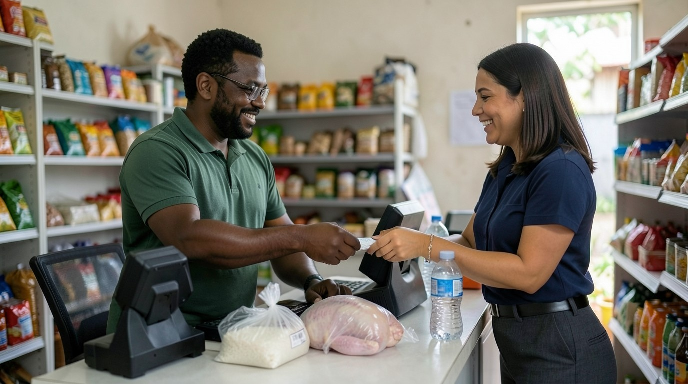
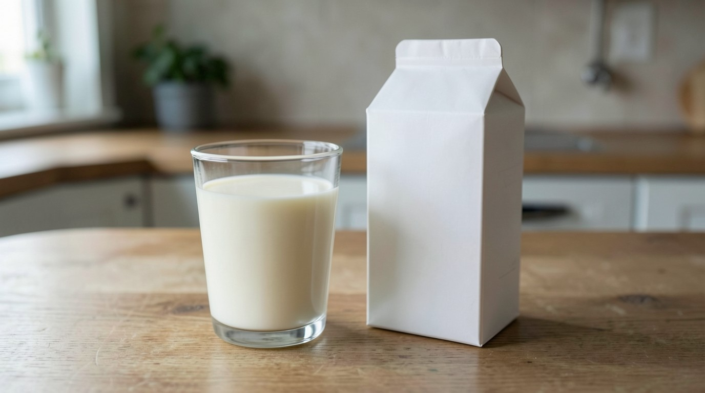
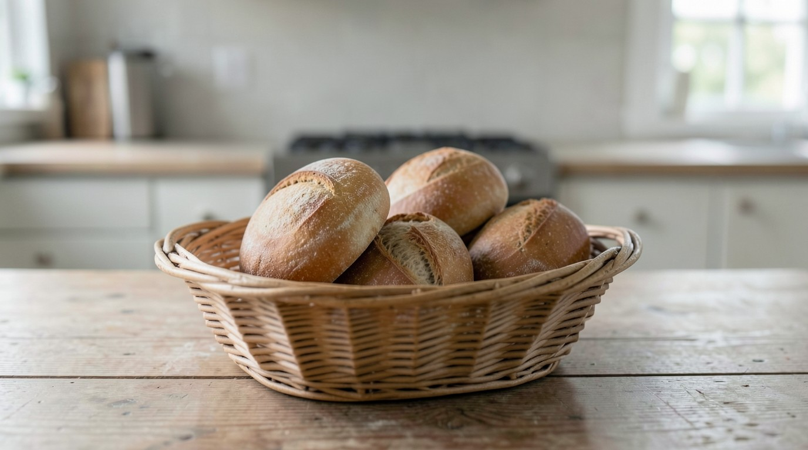
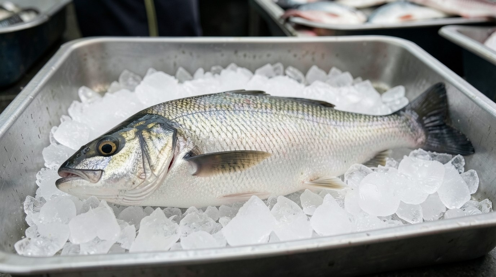
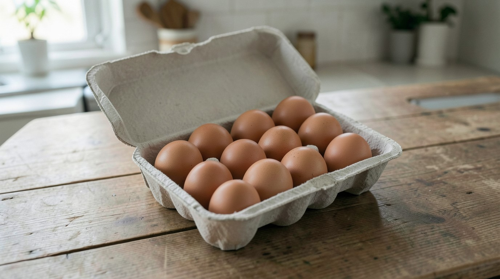

Día 1. Escucha
- Mira la imagen y escucha el diálogo una vez, sin leer.
- Escucha cada palabra y elige el significado.
- Escucha otra vez y lee. Tapa el español; destápalo solo si lo necesitas.

Diálogo
Ana. Hello, Luis. Can I have some rice and a chicken, please?
Hola, Luis. ¿Me das arroz y un pollo, por favor?
Luis. Yes. The rice is 2 dollars. The chicken is 6 dollars.
Sí. El arroz cuesta 2 dólares. El pollo cuesta 6 dólares.
Luis. A small water is 1 dollar. A large water is 2 dollars.
Un agua pequeña cuesta 1 dólar. Un agua grande cuesta 2 dólares.
Luis. Yes, there are eggs. Twelve eggs are 3 dollars and 50 cents.
Sí, hay huevos. Doce huevos cuestan 3 dólares con 50 centavos.
Imágenes
Escucha las cuatro palabras. Para cada una, escribe la letra de la imagen.




Día 2. Estudia
En español pides «un arroz» o «un pan». En inglés, rice, bread y milk van sin a: Can I have some rice?
Una porción sí lleva a: a small coffee, a large water (un vaso, una botella).
Con 2, 3, 10 dólares, dollars lleva -s. Solo 1 dollar va sin -s.
No digas Can I have a rice? No digas three dollar.
- Corrige: Can I have a rice, please?
- Corrige: It is three dollar.
- Completa: Can I have ___ milk, please? (algo de)
- Completa: The chicken is 6 ___. (dólares)
- Elige: (a) A small water is 1 dollar. (b) A small water is 1 dollars.
- Completa: ___ there eggs? (¿Hay…?)
Las respuestas están en la clave.
/ð/ in the
Pon la punta de la lengua entre los dientes y deja salir el aire con voz: the. Se parece a la d suave de «cada», no a la d fuerte de «dedo». No digas «de rice».
Escucha. Repite. Grábate y escucha tu grabación una vez. Repite con el modelo.
Tarjetas
Di la palabra en español. Después toca la tarjeta para ver la respuesta y un ejemplo. Copia las tarjetas en papel.
water
agua
How much is the water?
rice
arroz
The rice is 2 dollars.
chicken
pollo
The chicken is 6 dollars.
fish
pescado
Can I have the fish, please?
bread
pan
Can I have some bread, please?
coffee
café
A small coffee, please.
eggs
huevos
Yes, there are eggs.
milk
leche
No milk, thank you.
small
pequeño
A small water is 1 dollar.
large
grande
A large water, please.
Día 3. Habla y escribe
Tu lista de compras
Primero lee la lista de Ana y escucha su pedido. Después escribe tu lista real para una comida, con precios en dólares y el total, y pídela a Luis con la pista de pausas.
Rice — $2.00
Chicken — $6.00
Large water — $2.00
Total — $10.00
Can I have some rice, a chicken, and a large water, please? How much is it?
Conversación con Luis
Luis pregunta. Suena un tono. Tú respondes en el silencio. Después Ana responde.
- Primera vez: responde como Ana.
- Segunda vez: responde sobre ti. Grábate con el teléfono.
- Luis. Hello, Ana.
Ana. Hello. Can I have some bread, please? - Luis. The bread is 2 dollars. And coffee?
Ana. Yes. A small coffee, please. - Luis. A small coffee is 1 dollar and 50 cents. And milk?
Ana. No milk, thank you. Is there fish? - Luis. Yes, there is fish. It is 5 dollars.
Ana. Can I have the fish, please? - Luis. Bread, coffee, and fish.
Ana. How much is it? - Luis. It is 8 dollars and 50 cents.
Ana. Thank you, Luis.
Ahora tú
________ — $____
________ — $____
________ — $____
Total — $____
Día 4. Otra vez, solo en inglés
Lee el diálogo una vez. Después habla con el audio al mismo tiempo.
Luis. Hello, Ana.
Ana. Hello, Luis. Can I have some rice and a chicken, please?
Luis. Yes. The rice is 2 dollars. The chicken is 6 dollars.
Ana. How much is the water?
Luis. A small water is 1 dollar. A large water is 2 dollars.
Ana. A large water, please. Are there eggs?
Luis. Yes, there are eggs. Twelve eggs are 3 dollars and 50 cents.
Ana. No eggs, thank you. How much is it?
Luis. It is 10 dollars.
Ana. Thank you, Luis.
Lectura
Lee el texto dos veces. La segunda vez, lee con el audio.
It is Monday morning. Ana has coffee and bread. Sofia has milk and eggs. At night, Ana cooks fish and rice. There is no chicken. A small fish is 4 dollars, and a large fish is 7 dollars. Ana has 10 dollars. She has one large fish and some rice. The rice is 2 dollars. It is 9 dollars total.
¿Puedo hacerlo?
I can buy food and ask the price.
Corrige: Can I have a rice? It is ten dollar.
Si todavía no, repite el día 2 (rice sin a; dollars con -s). Después repite el día 3 con la pista de pausas.